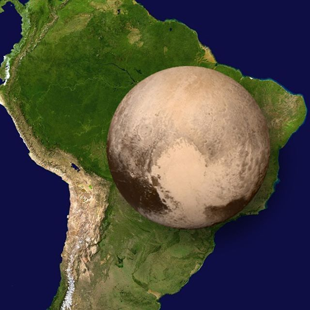

Nos não somos nada...
Esse é Plutão, conhecido como "Planeta Anão", ele tem 2.376,6 km, se ver exatamente ele é menor que a América Latina...

Agora as coisas começam a ficar interessante, essa foto a baixo é a comparação da Terra com 12.742 km ao Sol com 1.392.700 km
Bem... como eu disse antes, nós não somos nada, e quando eu digo "nada" eu estou comparando o nosso SOL com a queria estrela Stephenson 2-18...
A estrela Stephenson 2-18 para você ter ideia, a terra tem 12.742 km, e a Stephenson 2-18 tem 2,9915 x 10^9 km. vamos calcular: Se fizermos esta conta, chega aproximadamente a 3 BILHÕES de Quilometros e se compararmos com a Terra, essa estrela é 235.441x MAIOR que a TERRA e 2.154x MAIOR que o SOL...não somos nada.